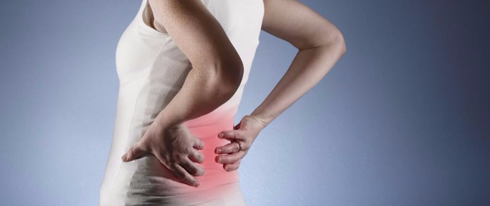

BEL FITIĞI
Bel omurlarının arasında yer alan kıkırdak yastıkların (diskler) omurga kanalına doğru yer değiştirmesine bel fıtığı adı verilir. Fıtıklaşan yapı omurilik kanalına uzanarak omuriliğe ve/veya bacaklara giden sinirlere baskı yapabilir. Bu durum bel ve bacak ağrısı, bacakta uyuşma, üşüme ve karıncalanma hissine, yürüme güçlüğü ve işgücü kaybına, ileri durumlarda idrar tutamama, bacakta ileri kuvvetsizlik gibi önemli tablolara yol açar. Tedavinin gecikmesi, sorunun büyümesine veya kalıcı olmasına neden olabilir. Ameliyat gerektiği durumlarda hekiminiz sizi bilgilendirecektir. Günümüzde, mikrocerrahi ve endoskopik yöntemler (halk arasında kapalı ameliyat olarak da bilinir) bel fıtığı ameliyatlarını çok güvenli ve pratik hale getirmiştir. Hastalar ameliyat sonrasında ağrılarından hemen kurtulmakta, aynı gün yürüyebilmektedir. Hastane yatış süresi ise 1 güne inmiştir. Birkaç haftalık koruma ve istirahati takiben eski hayatlarına rahatlıkla dönebilmektedirler.
BOYUN FITIĞI
Bel fıtıklarındaki benzer mekanizma ve sorunlar boyunda da geçerlidir. Boyun omurları arasındaki disklerde yıpranma, zamanla omurilik kanalına doğru fıtıklaşmaya, omurilik ve boyundan kollara giden sinirlerde ciddi bası oluşturabilmektedir. Bu nedenle boyunda ağrılar, sık tutulmalar, baş dönmesi ve kısa süreli göz kararması atakları, kolda ağrı, uyuşma, karıncalanma, güç kaybı ile ellerde beceriksizlik gibi sorunlarla karşılaşılmaktadır. Boyun bölgesinden geçen omurilik vücudun tümüne giden bir kumanda hattı olduğundan omurilik sıkışmaları kol ve bacaklarda güç kaybı, denge bozuklukları, yürüme güçlüğü, idrar tutamama gibi daha da ileri sorunlar olarak da karşımıza çıkabilmektedir. Cerrahi gerekmeyen durumlarda ilaç tedavisi, koruma, kilo kontrolü, boyun egzersizleri, gerekirse boyunluk kullanımı ve fizik tedavi programları önemli yer tutmakta iken cerrahi gerektirecek kadar ilerlemiş vakalarda mikrocerrahi ve teknikleri günümüzde kolaylıkla ve güvenle uygulanmakta hastalar kalıcı fayda görmektedirler. Aynı şekilde ameliyat günü hastalar ayağa kaldırılmakta, ertesi gün de taburcu edilmektedirler. Üç hafta istirahat ve korumayı takiben eski hayatlarına geri dönebilmektedirler.